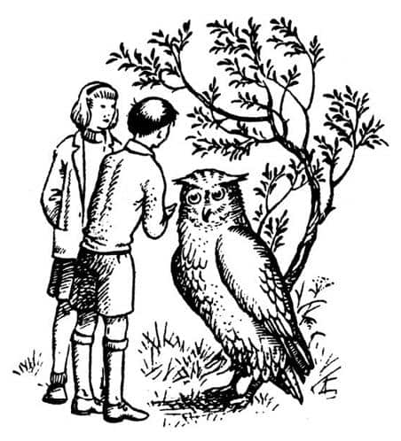

Kralın Denize Açılışı
Scrubb’ın o kadar çirkin görünmesinin sebebi, bulundukları yerin güzelliğiydi. Jill kendini görebilseydi, kendisi hakkında da aynı şeyleri düşünecekti. O manzarayı hemen anlatsam iyi olur.
Günışığı, Jill’in karaya yaklaşırken gördüğü dağların arasından, güzel bir bahçeye süzülmekteydi. Bahçenin bir kenarında, tepelerinde rüzgârgüllerinin parıldadığı irili ufaklı birçok kulesi olan bir kale vardı; Jill’in şimdiye kadar gördüğü en güzel kaleydi bu. Bahçenin onlara yakın tarafında beyaz mermerden bir rıhtım vardı. Rıhtıma bağlı bir gemi gördüler; yüksek bir baş kasarası, yüksek bir kıçı vardı. Direğinin tepesinde büyük bir bayrak, güvertesinde birçok flama dalgalanıyordu. Küpeştesi boyunca gümüş gibi parlayan bir sıra kalkan asılıydı. Altın yaldızlı, kırmızı bir gemiydi. İndirilen pasarellanın hemen yanı başında, gemiye çıkmak üzere olan çok yaşlı bir adam dikiliyordu. Gösterişli kırmızı pelerininin altından gümüş zırhı görünüyordu. Başında bir altın taç vardı. Yün gibi bembeyaz sakalı neredeyse beline kadar iniyordu. Bir eliyle kendisinden daha genç görünen iyi giyimli bir lordun omzuna tutunuyordu. Güçsüz olduğu belliydi. Üflesen uçacakmış gibi görünüyordu, gözleri yaşarmıştı.
Gemiye binmeden önce, vedalaşmak için yüzünü halkına dönen kralın önünde küçük bir tekerlekli sandalye duruyordu. Sandalyeye, irice bir av köpeği büyüklüğünde bir eşek koşulmuştu. Bu sandalyede küçük şişko bir cüce oturuyordu. O da kral kadar iyi giyinmişti, ama çok şişman olduğundan ve yastıklar arasında kambur oturduğundan çok farklı bir görüntü oluşturuyor; kürk, ipek ve kadifeden oluşan küçük ve şekilsiz bir yığın gibi görünüyordu. Kral kadar yaşlıydı, ama sağlıklı görünüyordu ve çok keskin gözleri vardı. Aşırı derecede büyük ve kel kafası, batan güneş ışığında kocaman bir bilardo topu gibi parlıyordu.
Daha geride insanlar bir yarım daire oluşturmuştu. Jill, bunların saray erkânı olduğunu anlamakta gecikmedi. Sadece elbiseler ve zırhlar bile görülmeye değerdi. Gözlerinin önündekiler bir çiçek bahçesini andırıyordu. Fakat Jill’in ağzını bir karış açmasına neden olan şey insanlardı. Tabii “insanlar” doğru kelimeyse. Çünkü sadece her beş kişiden biri insandı. Gerisi, bizim dünyamızda hiç görmediğiniz türden şeylerdi; Faunlar, Satirler, Sentorlar. Jill bunların isimlerini biliyordu, çünkü resimlerini görmüştü. Cüceler de vardı. Ayrıca bildiği birçok hayvan da oradaydı; ayılar, porsuklar, köstebekler, leoparlar, fareler ve çeşitli kuşlar. Ama bunlar İngiltere’deki hayvanlardan o kadar farklıydı ki… Bazıları çok daha büyüktü – örneğin fareler arka ayakları üzerinde duruyordu ve boyları altmış santimetrenin üzerindeydi. Ama bundan öte bir farklılıkları daha vardı. Yüzlerindeki ifadeden sizin kadar iyi konuşup düşünebildikleri anlaşılıyordu.
“Aman Tanrım!” diye düşündü Jill. “Duyduklarım gerçekmiş.” Ardından hemen ekledi, “acaba bunlar dost mu?” Çünkü az önce kalabalığın kenarında bir ya da iki devle ismini hiç bilmediği bazı yaratıklar görmüştü.
O anda Aslan’ı ve işaretleri hatırladı. Son yarım saattir hepsi uçup gitmişti aklından.
“Scrubb!” diye fısıldadı, kolunu tutarak. “Scrubb, çabuk! Tanıdık birini görüyor musun?”
“Yine mi geldin?” dedi Scrubb huysuzca (bunun için haklı bir nedeni vardı). “Pekâlâ, sessizce dur tamam mı? Ne söylediklerini duymak istiyorum.”
“Aptallaşma” dedi Jill. “Kaybedecek zaman yok. Burada eski bir dost görüyor musun? Çünkü hemen gidip konuşmalısın onunla.”
“Sen neden bahsediyorsun?” dedi Scrubb.
“Aslan’dan, Aslan bunu yapman gerektiğini söyledi” dedi Jill umutsuzca. “Onu gördüm.”
“Gördün ha, gerçekten mi? Ne dedi?”
“Narnia’da göreceğin ilk insanın eski bir dost olacağını ve onunla hemen konuşman gerektiğini söyledi.”
“Pekâlâ, burada daha önce gördüğüm kimse yok ve buranın Narnia olup olmadığını da bilmiyorum.”
“Daha önce buraya geldiğini söylemiştin, öyle sanıyordum” dedi Jill.
“Hata ediyordun öyleyse.”
“Şey, çok hoş! Bana dedin ki—”
“Tanrı aşkına kes konuşmayı da ne dediklerini duyalım.”
Kral cüceyle konuşuyordu, ancak Jill söylenenleri duyamıyordu. Görebildiği kadarıyla cüce, sürekli başını sallıyor, ama cevap vermiyordu. Sonra kral sesini yükseltip tüm saray erkânına hitap etti. Sesi öyle yaşlı ve çatallı çıkıyordu ki, söylenenlerin çok azını anlayabiliyordu. Bunun sebebi konuşmanın hiç duymadığı insanlar ve yerler hakkında olmasıydı. Konuşması bitince kral eğildi ve cüceyi iki yanağından öptü, doğruldu, sanki onu kutsuyormuş gibi sağ elini kaldırdı, yavaş ve zayıf adımlarla pasarellayı geçip gemiye bindi. Saray erkânı bu vedalaşmadan çok etkilenmiş görünüyordu. Mendiller çıkarılmıştı, her yerde ağlama sesi duyuluyordu. Pasarella çekildi, kıçtan trompetler duyuldu ve gemi rıhtımdan ayrıldı. (Yedeğinde bir kayık çekilmekteydi, ama Jill bunu görmedi.)
“Şimdi—” dedi Scrubb, ama daha fazla konuşmadı, çünkü o anda büyük ve beyaz bir şey – Jill bir an için bunun bir uçurtma olduğunu düşünmüştü – gökyüzünden süzülerek inmiş ve ayaklarının dibine konmuştu. Bu beyaz bir baykuştu, ama büyüklüğü iri bir cüce kadardı.
Sanki yakını göremiyormuş gibi dikkatle bakıp gözlerini kırpıştırdı, başını hafifçe yana eğdi ve yumuşak baykuş sesiyle:
“Pu-huuu, pu-huuu! Siz ikiniz kimlerdensiniz?” dedi.
“Benim ismim Scrubb, bu da Pole” dedi Eustace. “Bize nerede olduğumuzu söyleyebilir misin?”
“Narnia ülkesinde, krala ait Cair Paravel Kalesi’ndesiniz.”
“Az önce gemiye binen kral mıydı?”
“Çok doğru, çok doğru” dedi Baykuş, hüzünle başını sallayarak. “Peki siz kimsiniz? Halinizde büyülü bir hava var. Geldiğinizi gördüm: Uçuyordunuz. Buradakiler kralla vedalaşmakla meşguldü, kimse fark etmedi. Ben hariç. Sizi tesadüfen gördüm, uçuyordunuz.”

“Biz buraya Aslan tarafından gönderildik” dedi Eustace alçak bir sesle.
“Pu-huuu, pu-huuu!” dedi Baykuş, tüylerini kabartarak. “Bu benim için çok fazla, özellikle ikindi vaktinde. Gün batmadan kendime gelemiyorum.”
“Kayıp prensi bulmak üzere gönderildik” dedi konuşmaya katılmak için endişeyle bekleyen Jill.
“Bunu ilk kez duyuyorum” dedi Eustace. “Ne prensi?”
“Hemen gelip kral naibiyle konuşsanız iyi olur” dedi Baykuş. “Orada, eşek arabasında oturan o; Cüce Yaygaracı.” Kuş dönerek onlara yol göstermeye başladı. Kendi kendine mırıldanıyordu, “Huuu! Pu-huuu! Ne iş ama! Henüz sağlam kafayla düşünemiyorum. Çok erken.”
“Kralın adı ne?” diye sordu Eustace.
“X. Caspian” dedi Baykuş. Jill, Scrubb’ın neden aniden durup, renginin attığını merak etti. Onu daha önce böylesine solgun görmediğini düşünüyordu. Ancak soru sormaya fırsat bulamadan eşeğinin dizginlerini toplamış, kaleye geri dönmeye hazırlanan Cüce’ye ulaşmışlardı. Saray mensupları da dağılıyor, birer ikişer ya da küçük gruplar halinde, bir maç ya da yarış seyretmekten dönen insanlar gibi aynı yöne gidiyorlardı.
“Pu-huu! Hım! Lord Naip” dedi Baykuş, biraz eğilip gagasını Cüce’nin kulağına yaklaştırarak.
“Hah? O da ne?” dedi Cüce.
“İki yabancı, Lordum” dedi Baykuş.
“Bancı mı? Ne demek istiyorsun?” dedi Cüce. “Ben olağanüstü kirli iki insan yavrusu görüyorum. Ne istiyorlar?”
“Benim ismim Jill” dedi Jill, aniden ileri atılarak. Yerine getirmeleri gereken önemli görevi anlatmaya can atıyordu.
“Kızın adı Jill” dedi Baykuş, çıkarabildiği kadar yüksek bir sesle.
“Ne dedin?” dedi Cüce. “Kızlar çok mu bencil? Bir kelimesine bile inanmıyorum. Hangi kızlar? Niye benciller?”
“Sadece bir kız, Lordum” dedi Baykuş. “İsmi Jill.”
“Konuş, konuş” dedi Cüce. “Orada dikilerek kulağımda vızıldayıp cıvıldayıp durma. Kim bencil?”
“Kimse bencil değil” dedi Baykuş.
“Kim?”
“KİMSE!”
“Tamam, tamam. Bağırmana gerek yok. O kadar da sağır değilim. Buraya gelip kimsenin bencil olmadığını söylemekle ne demek istiyorsun? Niye biri bencil olsun ki?”
“Ona benim Eustace olduğumu söylesen iyi edersin” dedi Scrubb.
“Bu çocuk Eustace, Lordum” dedi Baykuş avazı çıktığı kadar bağırarak.
“Yüzsüz mü?” dedi Cüce, öfkeyle. “Sanırım öyle. Bu onu saraya getirmek için bir neden mi? Hııı?”
“Yüzsüz değil” dedi Baykuş. “Eustace.”
“Süzgeç ha? Ne dediğini anladığımdan emin değilim. Sana ne olduğunu söyleyeyim Bay Pasparlak; ben genç bir cüceyken bu ülkede gerçekten konuşabilen kuşlar ve konuşan hayvanlar vardı. Bu homurtular, mırıltılar ve fısıltılar yoktu. Bir an için bile hoş görülmezdi. Bir an için bile, efendim. Semaver Kafa, borumu ver lütfen—”
Ne zamandır sessizce Cüce’nin dirseğinin dibinde dikilmekte olan küçük bir Faun, Cüce’ye gümüş bir kulak-borusu uzattı. Bir müzik aletine benziyordu ve Cüce’nin boynuna asılıydı. Cüce onu yerine koymaya uğraşırken Baykuş Pasparlak çocuklara fısıltıyla şöyle dedi: “Kafam biraz daha yerine geldi. Kayıp prens hakkında bir şey söylemeyin. Sonra açıklarım. Pu-huu, olamaz, olamaz! Ah, ne iş ama!”
“Şimdi” dedi Cüce, “söyleyeceğin aklı başında bir şeyler varsa, Bay Pasparlak, söylemeyi dene. Derin bir nefes al ve çok hızlı konuşma.”
Bay Pasparlak çocukların yardımıyla, Cüce’nin öksürük krizine rağmen yabancıların Aslan tarafından Narnia sarayını ziyarete gönderildiklerini anlatmayı başardı. Cüce tuhaf bir tavır takınarak çocukları bir güzel süzdü.
“Aslan tarafından gönderildiniz ha?” dedi. “Ve diğer taraftan, hımm, Dünyanın Sonu’nun ötesinden ha?”
“Evet, Lordum” diye bağırdı Eustace, boruya doğru.
“Âdemoğlu ve Havvakızı ha?” dedi Cüce. Ama Uygulama Okulu’ndan gelen insanlar Âdem ve Havva’yı bilmezdi, bundan dolayı Jill ve Eustace bir şey söyleyemedi. Cüce bunu fark etmiş gibi görünmüyordu.
“Pekâlâ, dostlarım” dedi önce birinin, sonra diğerinin elini tutup hafifçe başını eğerek. “Canı gönülden, hoş geldiniz. İyi Kral, benim zavallı efendim bu saatte Yedi Adalar’a yelken açmış olmasaydı sizi gördüğüne çok memnun olurdu. Bu bir an için onu gençliğine döndürürdü – bir an için. Şimdi akşam yemeği zamanıdır. Yarın sabahki genel toplantıda bana görevinizi anlatırsınız. Bay Pasparlak, bu konuklara yatacak yer, uygun elbiseler ve gereken diğer şeyleri ayarla. Ayrıca Pasparlak—”
Burada, Cüce ağzını Baykuş’un kulağına yaklaştırmış, anlaşılan fısıldamayı tasarlamıştı; ama tıpkı sağır insanlar gibi, sesinin ölçüsünü pek iyi ayarlayamıyordu. İki çocuk da, “iyice yıkanıp paklanmalarını sağla” dediğini duymuştu.
Bundan sonra Cüce, eşeğini dürttü ve tırıs ile paytaklık arası bir hızla kaleye doğru yola çıktılar (eşek çok şişman ve küçük bir hayvandı). Faun, Baykuş ve çocuklar daha yavaş adımlarla onu takip ediyorlardı. Güneş batmış, hava soğumaya başlamıştı.
Bir meyve bahçesinden geçip Cair Paravel’in açık duran Kuzey Kapısı’na ulaştılar. İçeride çimlik bir avlu vardı. Sağlarındaki büyük salonun pencerelerinde ve tam önlerindeki bina yığınında şimdiden ışıklar görünmeye başlamıştı. Baykuş onlara yol gösterdi ve Jill’le ilgilenmesi için harika birini görevlendirdi. Jill’den pek uzun değildi ve oldukça narin yapılıydı, ama yetişkin biri olduğu açıkça belliydi; bir söğüt ağacı kadar zarifti, saçları da söğüt dallarına benziyordu. Sanki saçlarında yosunlar varmış gibi görünüyordu. Jill’i, küçük kulelerden birindeki yuvarlak bir odaya götürdü. Küçük bir gömme banyosu, ocağında tatlı kokular yayarak yanan odunlar vardı ve kemerli çatısından gümüş zincirle asılmış bir lamba sarkıyordu. Pencere batıya, tuhaf Narnia ülkesine bakıyordu ve Jill uzaktaki dağların ardında günbatımının son kızıllıklarını görebiliyordu. Bu onun yeni maceralar arzulamasına neden oluyor ve bunun sadece bir başlangıç olduğunu hissettiriyordu.
Banyosunu yapıp saçlarını taradıktan, onun için getirilen elbiseleri giydikten sonra – bunlar sadece rahat elbiseler değil, aynı zamanda güzel görünen, güzel kokan ve hareket ettiğinizde güzel sesler çıkaran elbiselerdi – pencereden bakmak üzere geri gidecekti ki, tam o anda kapıdan gelen gürültüyü duyunca durdu.
“Girin” dedi Jill. Scrubb içeri girdi, o da banyo yapmış ve gösterişli Narnia giysilerini giymişti.
“Ah, nihayet buldum seni” dedi öfkeyle, kendini bir sandalyeye atarak. “Uzun süredir seni arıyordum.”
“Pekâlâ, buldun işte” dedi Jill. “Bana bak Scrubb, her şey kelimelerle anlatılamayacak kadar heyecanlı ve şahane değil mi?” İşaretleri ve kayıp prensi bir an için tamamen unutmuştu.
“Demek böyle düşünüyorsun ha?” dedi Scrubb. Kısa bir duraklamadan sonra, “Buraya hiç gelmemiş olmayı isterdim.”
“Neden ki?”
“Kralı – Caspian’ı – böyle zayıf ve yaşlı bir adam olarak görmeye dayanamıyorum” dedi Scrubb.
“Neden, sana ne zararı var ki?”
“Ah, anlamıyorsun. Aslında bunu anlayamayacağını tahmin etmeliydim. Sana bu dünyanın bizimkinden farklı bir zaman anlayışı olduğunu söylememiştim.”
“Ne demek istiyorsun?”
“Burada geçirdiğin zaman, kendi zamanımızdan bir şey kaybettirmiyor. Anlıyor musun? Demek istiyorum ki, burada ne kadar kalırsak kalalım Uygulama Okulu’na orayı terk ettiğimiz an döneceğiz—”
“Bu pek hoş olmayacak.”
“Off, sus. Sözümü kesip durma. İngiltere’ye geri döndüğünde burada zamanın nasıl geçtiğini anlayamazsın. Biz evde bir yıl geçirsek, Narnia’da birçok yıl geçmiş olabilir. Pevensie’ler söylemişti, aptal gibi hepsini unutmuşum. Şimdi açıkça görüyorum ki, son kez buraya geldiğimden beri yaklaşık yetmiş yıl – Narnia yılı – geçmiş. Şimdi anlıyor musun? Geri dönüyor ve Caspian’ı çok yaşlı bir adam olarak buluyorum.”
“O zaman Kral senin eski dostun!” dedi Jill. Aklına çok kötü bir şey gelmişti.
“Öyle olduğunu sanırım” dedi Scrubb, umutsuzca. “İnsanın sahip olabileceği en iyi arkadaş. Son kez gördüğümde benden sadece birkaç yaş büyüktü. O beyaz sakallı yaşlı adama bakıp, Caspian’la Issız Adalar’ı ele geçirdiğimiz günün sabahını ya da Denizyılanı’yla kavgamızı hatırlamak, ah, çok korkunç. Gelip öldüğünü öğrenmekten çok daha kötü.”
“Kapa çeneni” dedi Jill sabırsızca. “Sandığından çok daha kötü. İlk işareti kaçırdık.” Scrubb bunu anlamadı. Sonra Jill Aslan’la neler konuştuğunu, dört işareti ve onlara verilen görevi; kayıp prensi bulma görevini anlattı.
“Böylece, görüyorsun ki” diye toparladı, “Aslan’ın dediği gibi eski bir dost gördün, gidip hemen onunla konuşman gerekirdi. Tabii konuşmadığın için her şey en başından yanlış gitmeye başladı.”
“Nereden bilebilirdim ki?” dedi Scrubb.
“Sana söylemeye çalıştığımda beni dinleseydin her şey yoluna girerdi” dedi Jill.
“Evet, sen de o uçurumun kenarında aptalca oyunlar oynamasaydın hiç ayrılmazdık ve ikimiz de ne yapacağımızı bilirdik, neredeyse bir cinayet işliyordun – cinayet dedim ve istediğim kadar da tekrarlayacağım bunu, hazırlıklı ol.”
“Sanırım ilk gördüğün insan oydu” dedi Jill. “Buraya benden saatlerce önce gelmiş olmalısın. Ondan önce başka birini görmediğine emin misin?”
“Senden sadece bir dakika kadar önce gelmiştim” dedi Scrubb. “Seni benden daha hızlı üflemiş olmalı. Kaybedilen zamanı kazanmak için: Yani kaybettiğin zamanı.”
“Eşeklik etme, Scrubb” dedi Jill. “Hey! Bu da ne?”
Kalenin çanları akşam yemeğini haber veriyordu, sesler bir kavgaya dönüşmekte olan şeyi iyi bir tesadüf eseri yarıda kesti. O anda ikisinin de iştahı yerindeydi.
Kalenin büyük salonundaki akşam yemeği her ikisinin de yaşamlarında gördükleri en muhteşem şeydi. Eustace bu dünyaya daha önce gelmesine rağmen tüm zamanını denizde geçirmişti ve Narnia ülkesindeki nezaket ve ihtişam hakkında bir şey bilmiyordu. Tavandan bayraklar sarkıyor, her yemek borazan ya da davullar eşliğinde getiriliyordu. Düşüncesi bile ağzınızı sulandıracak çorbalar, harika balıklar, geyik etleri, tavuskuşları, turtalar, dondurmalar, jöleler, meyveler, çerezler, her türden şarap ve içecek vardı. Eustace’in bile neşesi yerine gelmiş, bunun “bir şeye” benzediğini kabul etmişti. Yemeğin sonlarına doğru kör bir şair ortaya çıkıp, Prens Cor, Aravis ve At Bree’nin At ve Çocuk denilen eski ve muhteşem hikâyesini anlattı. Bu hikâye Narnia, Calormen ve bunların arasındaki topraklarda, Peter’in Cair Paravel’de Yüce Kral Peter olduğu zamanlarda geçiyordu. (Dinlemeye değer bir hikâye olmasına rağmen onu anlatacak zamanım yok.)
Çeneleri yırtılacakmış gibi esneyerek güçlükle yukarıya, yatağa doğru giderlerken Jill, “Bu gece iyi uyuyacağımıza bahse girerim” dedi; çok zor bir gün geçirmişlerdi. Sadece talihin neler getirebileceğini bilmeyen bir insan böyle rahat davranabilir.